The whole role, in order
Every piece your character sings, act by act, ready to tick off as you learn it.
Case study
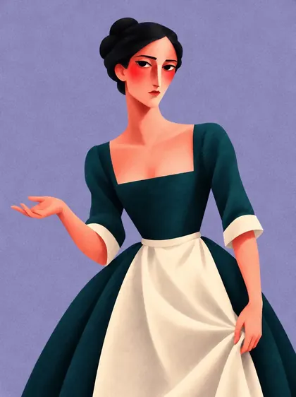
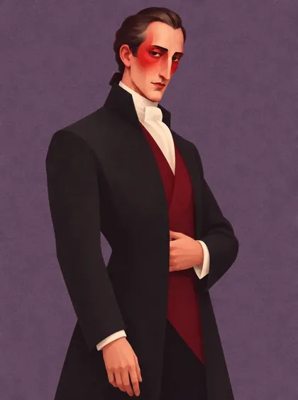
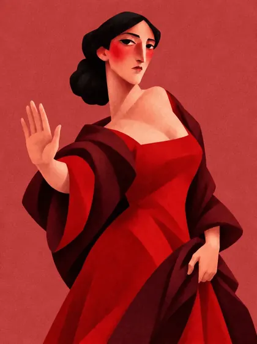
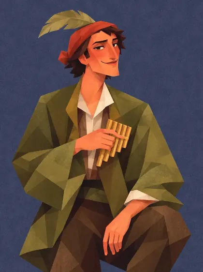
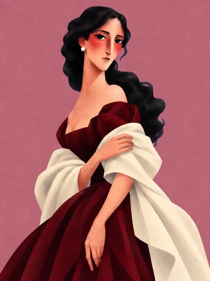
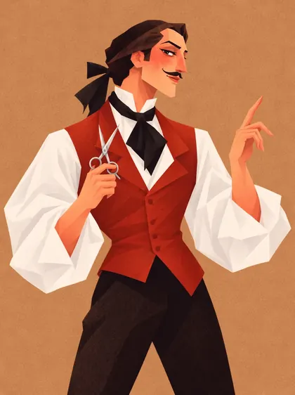
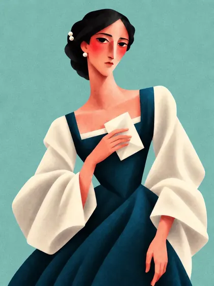
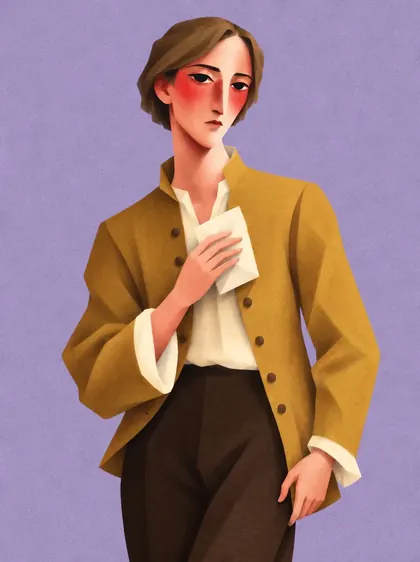
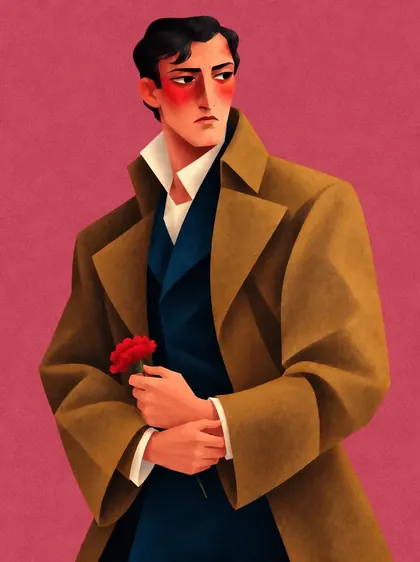
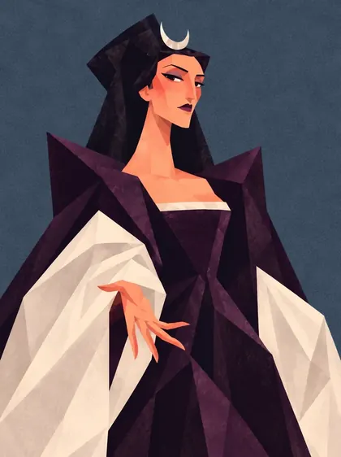
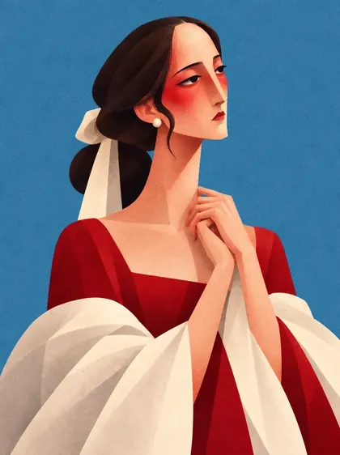
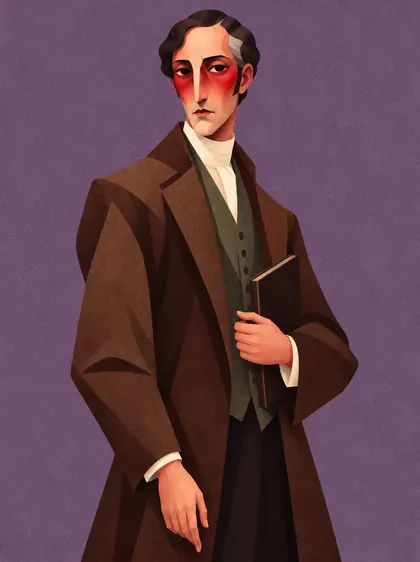
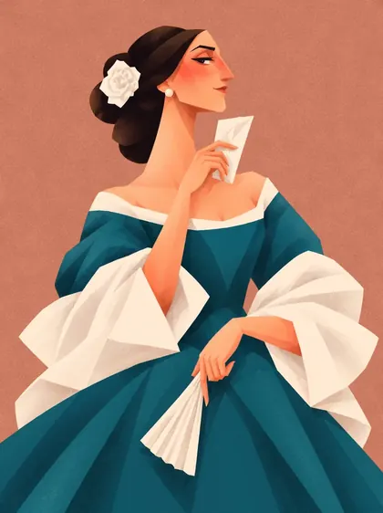
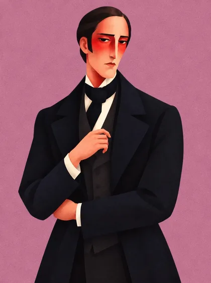
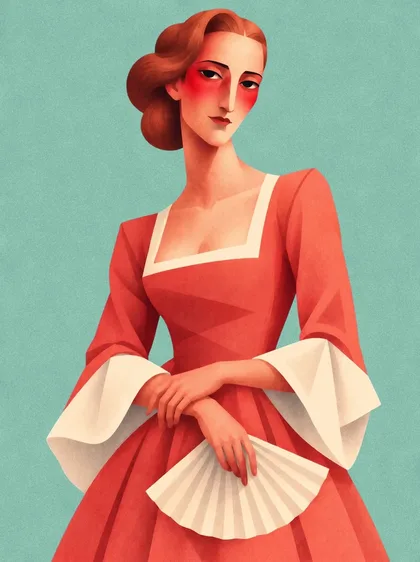
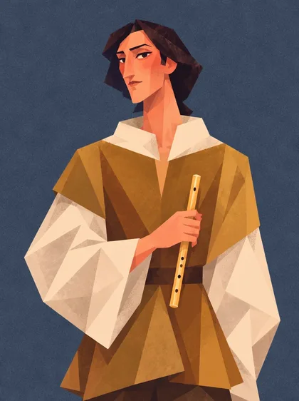
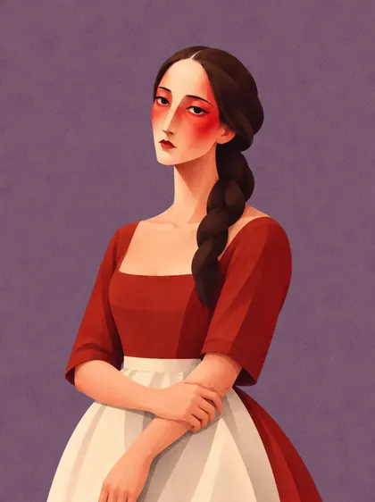
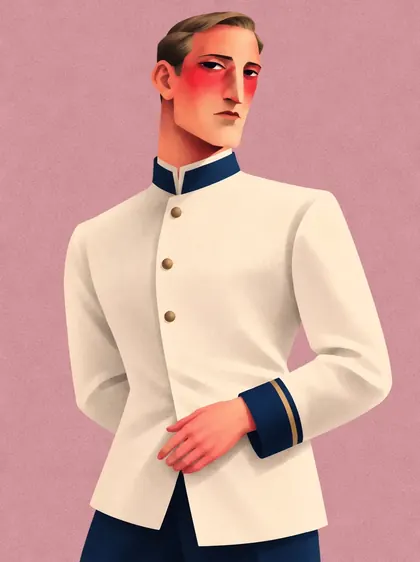
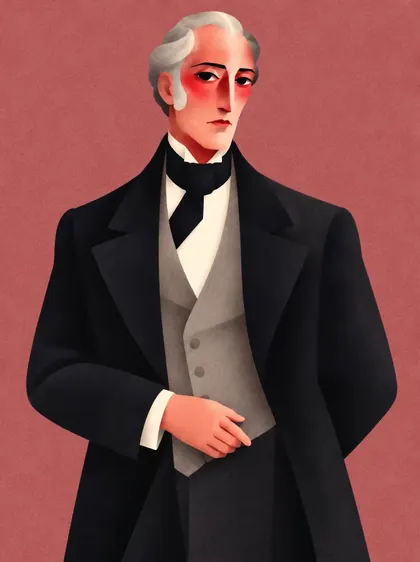
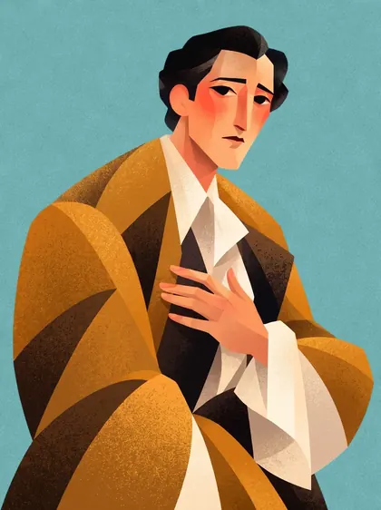
01 — THE PROBLEM
Learning an opera role means pulling it together from sources that never speak to each other.
The score is one book, the translation another. Pronunciation comes from a coach, a dictionary, or guesswork. To rehearse the ensemble you need recordings of every other part — or a répétiteur at a piano you may not play yourself.
A singer juggles all of it at once, holding everything the page can’t show in their head: where the stress falls, which vowel is open, how the harmony sits underneath.
Singing a role is hard enough on its own. Piecing it together from a dozen places before you can even begin shouldn’t be.
THE IDEA
Before designing a single screen, I filled a board with small bets — each one a guess at what bringing a whole role into one place could make possible.
02 — THE SOLUTION
Sottovoce brings the score, the words, the pronunciation, the practice tools, and the other voices into a single app, organised around the role you’re preparing.
You pick your voice type and your character in any opera, and everything they sing is laid out act by act, piece by piece, ready to learn: the notes, the words and how to say them, the story, and the rest of the cast singing with you.
Instead of assembling a role from a shelf of scores and a folder of recordings, a singer opens one screen and starts — the first line a minute away.
Pick a role. Everything it asks of you is already there.
Everything begins with the singer. Choose a voice type — soprano, mezzo, tenor, baritone or bass — then the role you’re preparing, in any opera from Mozart to Puccini.
From there the app knows what matters to you: the pieces your character sings, the cast around them, and the story you’re stepping into. Each piece sits in order, act by act, with what you’ve learned ticked off as you go.
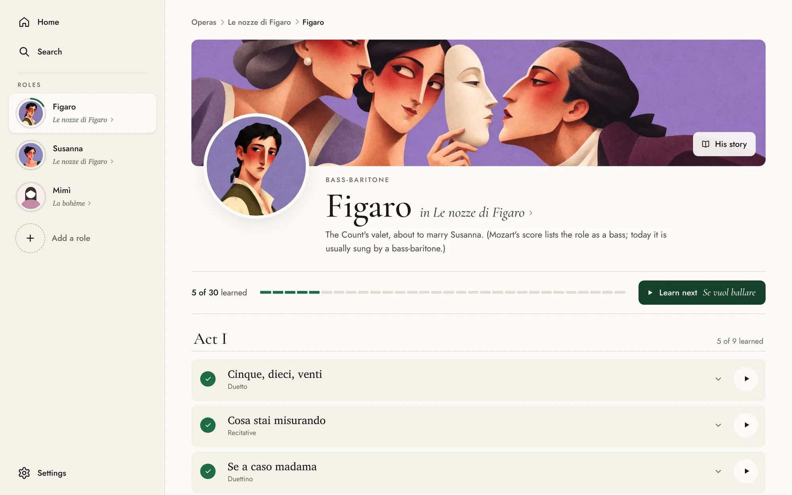
The words are treated as carefully as the notes. Every line sits beside its translation, with the face of whoever sings it, and every word carries its meaning, its IPA, and a spoken voice in the language it’s sung in.
Tips explain the things a score leaves out — where the stress falls, which vowels are open, how long a double consonant holds — so a singer can get the diction right without a coach in the room.
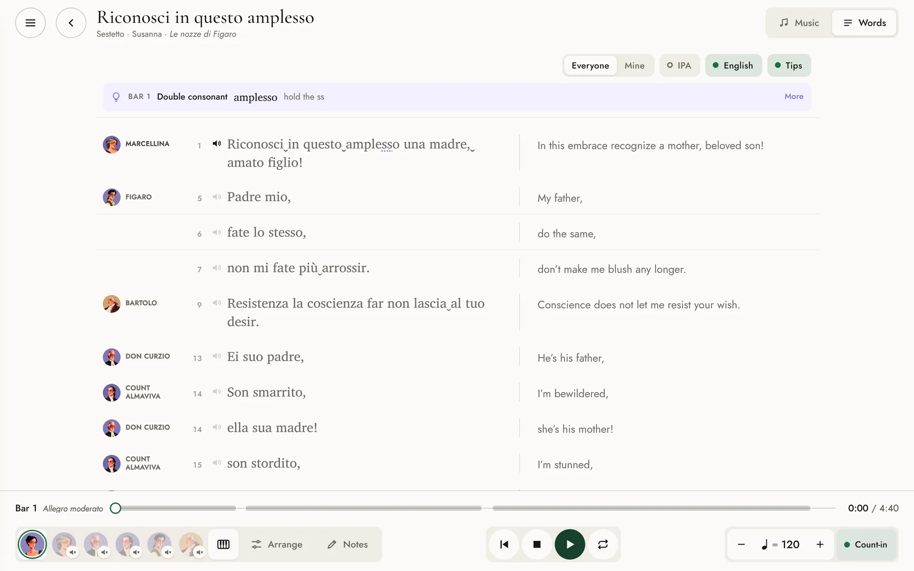
The hard parts have their own tools. Drag across the bars to choose them, loop them with a count-in, and slow the passage right down to learn it — then bring the tempo back up, one metronome mark at a time.
You can pencil a reminder over any bar, too, so a note to yourself — don’t rush — stays with the music.
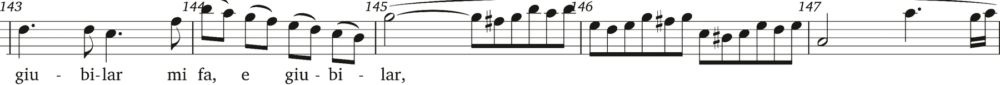
You decide who you’re singing with. Every voice gets its own controls: show it or hide it, fade it into the background or bring it into full ink, set how loud it is, and choose whether it’s sung or played on the piano.
Then reorder the staves however helps — your own line pinned to the top, or left as it sits in the score.
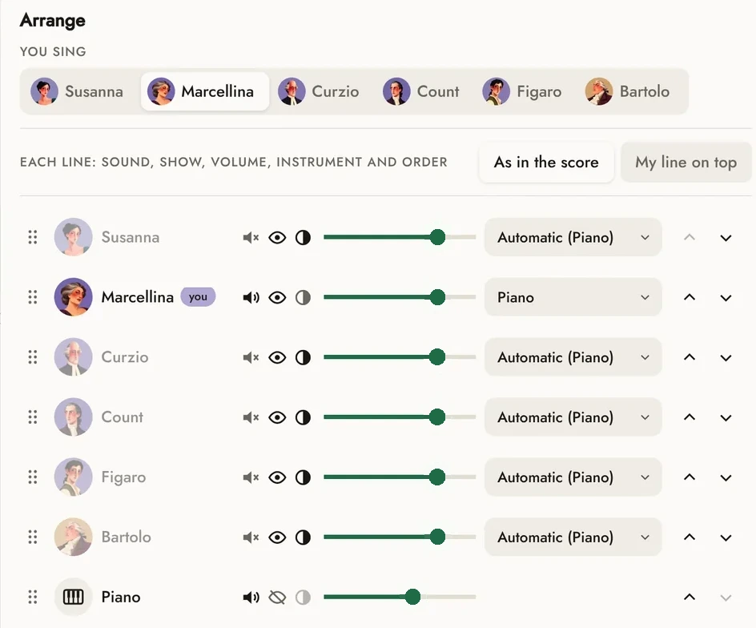
Every piece your character sings, act by act, ready to tick off as you learn it.
Meaning, IPA and a spoken voice for every line, in the language it’s sung in.
Hear your line, slow it down, and loop a tricky run with a count-in until it sits.
Every other part sung over a real concert grand — or taken by you, part by part.
03 — THE CRAFT
I approached Sottovoce as a single instrument for learning a role, not a stack of separate features. The score, the words, the practice tools and the cast all share one layout, one set of controls, and one visual language, so moving between them never feels like switching apps.
The interface stays out of the music’s way: a warm paper ground, a single forest green for anything you act on, lavender for the world of the opera, and a cast of hand-painted characters that give every role a face.
To keep it coherent across operas, voices and devices, I built a small, consistent system — the type pairing, the colour, the portraits, and a handful of reusable controls that behave the same everywhere.
The characters
A small cast of characters, hand-painted for Sottovoce, runs through the whole app — one face for every role.
That face follows the role wherever it goes. It’s the full-length portrait you choose from at the very start of this case study; it’s the cover of the opera the role lives in; and it shrinks to the little avatar beside every line you sing, in the cast bar, and on your own profile. Choose Susanna, and it’s Susanna who meets you each time you open the app.
Why it matters. It’s the part people remember. A score is abstract — staves, rests, a language you may not speak yet. Giving each role a face turns learning the notes into stepping in beside someone, and makes a practice tool feel warm, personal, and worth coming back to.